SmartText AI تطبيق مكتبي احترافي يجمع في واجهة واحدة أدوات الكتابة المعتمدة على الذكاء الاصطناعي: تحسين النصوص وإعادة صياغتها بأسلوب طبيعي، ومساعد محادثة ذكي، واثنتي عشرة أداة كتابة متخصصة، وتوليد الصور من الأوصاف النصية، وفحص التشابه بين المستندات محليًا. يعمل التطبيق باللغتين العربية والإنجليزية، مع دعم كامل للكتابة من اليمين إلى اليسار.
لا يحتوي التطبيق على نموذج ذكاء اصطناعي مدمج؛ بل يتصل بمزوّد تختاره أنت (OpenAI أو Anthropic أو أي خادم متوافق مع OpenAI مثل Ollama على جهازك)، باستخدام مفتاحك الخاص، فتبقى متحكمًا في الجهة التي تُرسل إليها نصوصك وفي التكلفة.
عن لقطات الشاشة في هذا الدليل
جميع اللقطات مأخوذة من واجهة SmartText AI الفعلية، وقد التُقطت آليًا عبر سكربت scripts/manual/capture-screenshots.mjs أثناء تشغيل الواجهة في وضع التطوير. ولعدم توفر مفاتيح API حقيقية أثناء إعداد الدليل، جاءت الردود النصية الظاهرة في بعض اللقطات من خادم محاكاة محلي (mock) يُعيد نصوصًا ثابتة مُعدّة مسبقًا، وقد نُبّه على ذلك في تعليق كل لقطة. أما شاشة توليد الصور فتظهر في حالتها الحقيقية عند عدم تهيئة مزوّد.
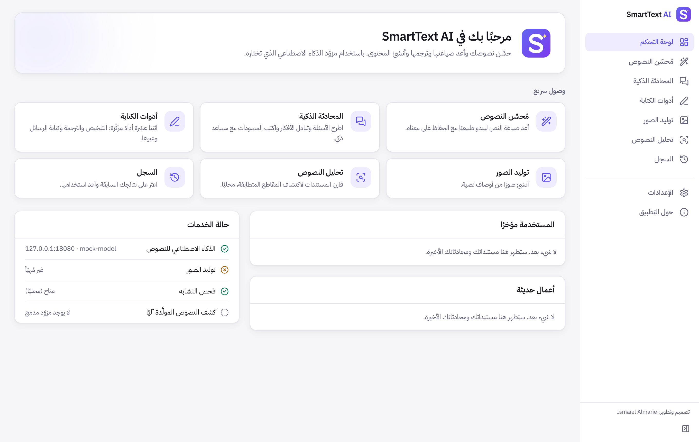
شكل 1-1: لوحة التحكم: بطاقات الوصول السريع، والأدوات المستخدمة مؤخرًا، والأعمال الحديثة، وحالة الخدمات (المزوّد المعروض هنا هو خادم المحاكاة المحلي).
لمن هذا التطبيق؟
الطلاب والباحثون الذين يحتاجون إلى تحسين صياغة النصوص الأكاديمية وتلخيص المراجع.
الموظفون والمديرون الذين يكتبون رسائل بريد وتقارير احترافية بسرعة.
كتّاب المحتوى والمسوّقون الذين يحتاجون إلى عناوين وأفكار ونصوص بنبرات مختلفة.
المترجمون ومن يعملون بين العربية والإنجليزية.
المطورون الذين يريدون قاعدة برمجية منظمة قابلة للتوسعة.
القدرات الرئيسية
القسم
ما يقدّمه
مُحسِّن النصوص
إعادة صياغة طبيعية بخمسة أساليب وثلاث درجات تحويل، مع عرض متجاور وإبراز للتغييرات، وتراجع وإعادة، ونسخ وتنزيل، وعدّاد للكلمات والأحرف.
وصف ونسبة أبعاد وجودة وأنماط جاهزة، مع معاينة وحفظ وسجل محلي (يتطلب مفتاح OpenAI).
تحليل النصوص
فحص تشابه محلي بين مستندين، مع توضيح أن كشف النصوص المولّدة آليًا غير مدمج في هذا الإصدار.
السجل والإعدادات
سجل محلي قابل للبحث والحذف، واللغة والسمة، ومزوّدو الذكاء الاصطناعي، والخصوصية.
متطلبات النظام
النظام
الحد الأدنى
ملاحظات
macOS
الإصدار 10.15 أو أحدث
معالجات Apple Silicon (arm64) وIntel (x86_64)، بحزمة منفصلة لكل منهما أو حزمة شاملة.
Windows
Windows 10 (1803+) أو Windows 11، 64 بت
يتطلب Microsoft Edge WebView2، وهو مدمج في Windows 11 ويُنزَّل تلقائيًا عند الحاجة.
الشبكة
اتصال بالإنترنت
لازم للمزوّدين السحابيين. فحص التشابه يعمل دون اتصال، وكذلك المزوّد المحلي (Ollama).
الحساب
مفتاح API لدى مزوّد
تُحتسب رسوم الاستخدام من حسابك لدى المزوّد.
2
الفصل الثاني
التثبيت
حالة حزم التثبيت في هذا الإصدارإعدادات بناء حزم macOS (.dmg) وWindows (.msi و-setup.exe) مكتملة، ويوجد سير عمل GitHub Actions يبنيها على أجهزة macOS وWindows حقيقية. غير أن هذا الدليل أُعدّ في بيئة Linux، فلم تُبنَ حزم macOS وWindows ولم تُختبر بعد؛ وما ورد أدناه هو خطوات التثبيت المعتادة لهذه الحزم عند بنائها.
التثبيت على macOS
نزّل الملف المناسب لجهازك: SmartText AI_1.0.0_aarch64.dmg لأجهزة Apple Silicon (M1 وما بعدها)، أو SmartText AI_1.0.0_x64.dmg لأجهزة Intel.
افتح الملف واسحب أيقونة SmartText AI إلى مجلد Applications.
شغّل التطبيق من مجلد التطبيقات أو من Launchpad.
تحذيرات الأمان في macOS
إذا لم تكن النسخة موقّعة وموثّقة (Notarized) من Apple، فسيمنع نظام Gatekeeper تشغيلها برسالة «لا يمكن فتح التطبيق لأنه من مطوّر غير معروف». لفتحه: انقر بزر الفأرة الأيمن على التطبيق ثم اختر فتح، أو اذهب إلى إعدادات النظام ← الخصوصية والأمان ← فتح على أي حال. ويمكن أيضًا تنفيذ الأمر:
النسخ الموقّعة بشهادة Developer ID والموثّقة من Apple تُفتح دون أي تحذير. وعند حفظ مفتاح API لأول مرة قد يطلب macOS السماح بالوصول إلى سلسلة المفاتيح، فاختر السماح دائمًا.
التثبيت على Windows
شغّل مثبّت SmartText AI_1.0.0_x64-setup.exe (يتيح اختيار العربية أو الإنجليزية)، أو حزمة SmartText AI_1.0.0_x64_en-US.msi المناسبة للنشر المؤسسي.
اتبع خطوات المعالج حتى النهاية.
شغّل التطبيق من قائمة ابدأ.
تحذير SmartScreen
قد تظهر رسالة «Windows protected your PC» إذا لم يكن المثبّت موقّعًا بشهادة توقيع برمجيات. انقر More info ثم Run anyway. التوقيع الرقمي للمثبّت يزيل هذا التحذير تدريجيًا مع بناء السمعة.
التشغيل الأول
تُفتح لوحة التحكم مباشرة، وتظهر رسالة تدعوك إلى ربط مزوّد ذكاء اصطناعي. تكون الواجهة بالإنجليزية افتراضيًا؛ ولتحويلها إلى العربية افتح Settings ← General ← Interface language واختر العربية، فينقلب اتجاه الواجهة كلها إلى اليمين فورًا.
شكل 2-1: التشغيل الأول لنسخة سطح المكتب الفعلية (لقطة من بناء Linux أُنشئ واختُبر أثناء التطوير؛ الواجهة نفسها في macOS وWindows).
حل مشكلات التثبيت الشائعة
المشكلة
الحل
macOS: «التطبيق تالف ولا يمكن فتحه»
الملف عليه علامة الحجر لأنه غير موقّع: نفّذ أمر xattr المذكور أعلاه.
macOS: التطبيق لا يعمل على جهازي
تأكد من اختيار الحزمة المطابقة لمعالجك (aarch64 أو x64) أو استخدم الحزمة الشاملة.
Windows: نافذة فارغة بيضاء
ثبّت أو أصلح Microsoft Edge WebView2 Runtime.
Windows: فشل تثبيت MSI
استخدم مثبّت -setup.exe بدلًا منه، أو شغّل MSI بصلاحيات المسؤول.
«النظام غير مدعوم»
الإصدار يدعم Windows 64 بت فقط وmacOS 10.15 فأحدث.
3
الفصل الثالث
الإعداد الأولي
اختيار مزوّد الذكاء الاصطناعي
افتح الإعدادات ← مزوّدو الذكاء الاصطناعي، ثم اختر من قائمة مزوّد ميزات النصوص أحد الخيارات الآتية:
المزوّد
العنوان الذي تُرسل إليه النصوص
متى تختاره
OpenAI
api.openai.com
للنصوص ولتوليد الصور معًا بمفتاح واحد.
Anthropic (Claude)
api.anthropic.com
لنماذج Claude في الكتابة والمحادثة.
خادم متوافق مع OpenAI
العنوان الذي تحدده
لتشغيل نموذج محلي (Ollama أو LM Studio) دون إرسال النص خارج جهازك، أو لخدمات مثل OpenRouter.
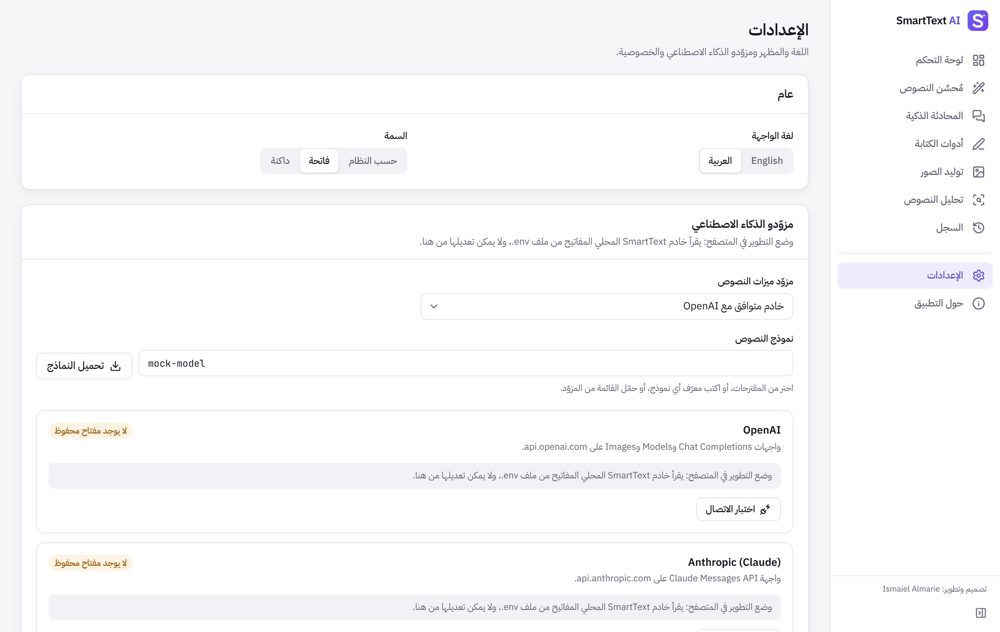
شكل 3-1: شاشة الإعدادات: اللغة والسمة، واختيار المزوّد والنموذج.
إضافة مفتاح API بأمان
أنشئ مفتاحًا من لوحة حسابك لدى المزوّد (مثلًا صفحة API Keys في OpenAI أو Anthropic Console).
الصق المفتاح في خانة مفتاح API ضمن بطاقة المزوّد، ثم اضغط حفظ المفتاح.
تظهر شارة خضراء «يوجد مفتاح محفوظ في سلسلة مفاتيح النظام»، وتُفرَّغ الخانة.
كيف يُحمى مفتاحك؟يُحفظ المفتاح في Keychain على macOS أو مدير بيانات الاعتماد (Credential Manager) في Windows، ولا يُخزَّن في ملفات التطبيق. لا يعرض التطبيق المفتاح مرة أخرى أبدًا، ولا تصل إليه واجهة التطبيق بعد حفظه؛ إذ يضيفه الجزء الأصلي (Rust) إلى الطلب مباشرة عند الاتصال بالمزوّد. لاستبداله اضغط استبدال المفتاح، ولحذفه اضغط إزالة المفتاح.
اختيار النموذج
في خانة نموذج النصوص يمكنك اختيار أحد المقترحات، أو كتابة معرّف أي نموذج يدعمه مزوّدك، أو الضغط على تحميل النماذج لجلب القائمة الفعلية المتاحة لحسابك من المزوّد. يُحفظ اختيار النموذج لكل مزوّد على حدة.
اختبار الاتصال
اضغط اختبار الاتصال في بطاقة المزوّد؛ فيطلب التطبيق قائمة النماذج من المزوّد، وتظهر رسالة «تم الاتصال» مع عدد النماذج المتاحة، أو رسالة خطأ واضحة تشرح السبب (مفتاح غير صالح، تعذّر الاتصال، عنوان غير مسموح…).
شكل 3-2: بطاقات المزوّدين ونتيجة اختبار اتصال ناجح بالخادم المتوافق (الخادم هنا خادم المحاكاة المحلي، ويعيد نموذجين وهميين). في وضع التطوير عبر المتصفح تُقرأ المفاتيح من ملف .env، لذا لا تظهر خانة إدخال المفتاح في هذه اللقطة؛ أما في نسخة سطح المكتب فتظهر خانة المفتاح وزرّا الحفظ والإزالة.
إعداد خادم محلي (اختياري)
لاستخدام نموذج على جهازك دون إنترنت ودون تكلفة، ثبّت Ollama ثم نزّل نموذجًا، واختر في التطبيق «خادم متوافق مع OpenAI» بالعنوان الافتراضي:
ollama pull llama3.1
# Server URL in SmartText:
http://localhost:11434/v1
يُسمح بعناوين http:// للخوادم المحلية (localhost) فقط؛ أما الخوادم البعيدة فيجب أن تستخدم https:// حمايةً لبياناتك.
حدود الاستخدام والتكلفة
يُحتسب كل طلب على حسابك لدى المزوّد وفق أسعاره المنشورة؛ ولا يفرض SmartText أي رسوم إضافية.
يعرض التطبيق عدد الرموز (Tokens) المُدخلة والمُخرجة عندما يوفّرها المزوّد، لكنه لا يقدّر الأسعار لأنها تتغير وتختلف بين النماذج.
عند تجاوز حد الطلبات يعيد التطبيق المحاولة تلقائيًا (حتى العدد المحدد في الإعدادات ← الشبكة)، ثم يعرض رسالة توضيحية.
4
الفصل الرابع
استخدام مُحسِّن النصوص
إدخال النص
افتح مُحسِّن النصوص من الشريط الجانبي (أو اضغط Ctrl+2 / ⌘2). الصق نصك في لوحة النص الأصلي أو اكتبه، أو استخدم زر إدراج نص مثال للتجربة. يظهر أسفل اللوحة عدد الكلمات والأحرف، ويُضبط اتجاه الكتابة تلقائيًا حسب لغة النص.
اختيار الأسلوب
الأسلوب
الاستخدام المناسب
مهني
رسائل العمل والتقارير والعروض.
أكاديمي
الأبحاث والمقالات العلمية، بلغة رسمية دقيقة.
حواري
منشورات التواصل والرسائل الودية.
موجز
إزالة الحشو وقول كل فكرة مرة واحدة.
إبداعي
نصوص تسويقية وسردية بإيقاع متنوع مع الحفاظ على المضمون.
اختيار درجة التحويل
خفيفة: تصحيح الأخطاء والعبارات الركيكة مع إبقاء معظم الجمل.
متوازنة: إعادة الصياغة لتحسين الانسياب وسهولة القراءة.
قوية: إعادة بناء الجمل والفقرات بحرية مع الحفاظ على كل معلومة.
ويمكنك أيضًا تحديد لغة الناتج (مثل لغة الإدخال، أو العربية، أو الإنجليزية)، وتفعيل تصحيح القواعد والإملاء وتقليل التكرار.
توليد النسخة المحسّنة
اضغط حسِّن النص. يظهر بجوار الزر اسم الجهة التي سيُرسل إليها النص والنموذج المستخدم، فتعرف دائمًا أين تذهب بياناتك. وعند الانتهاء تظهر النسخة المحسّنة في لوحة النص المُحسَّن، وهي قابلة للتحرير مباشرة.
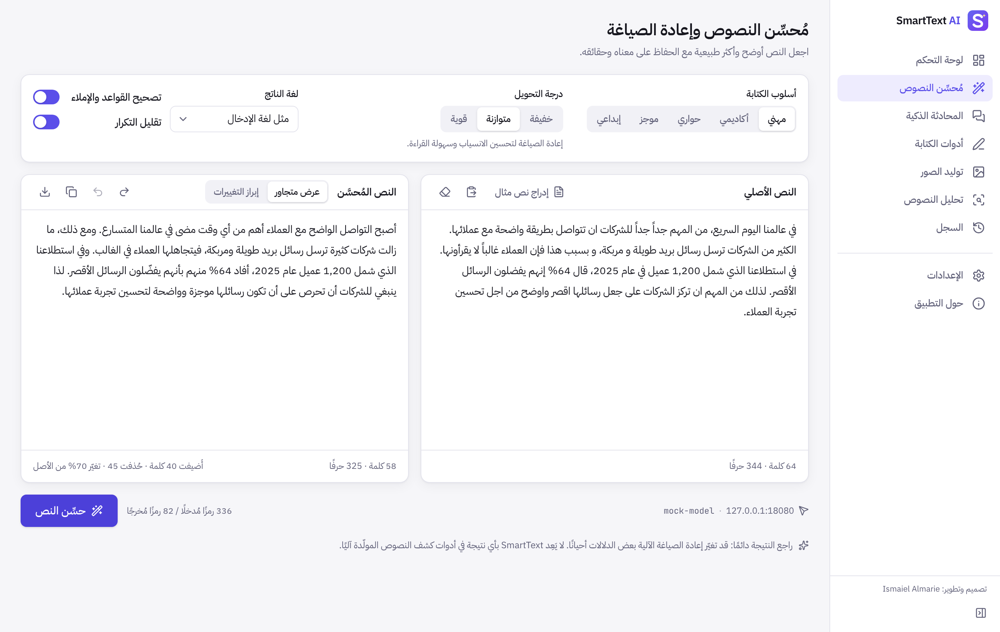
شكل 4-1: العرض المتجاور للنص الأصلي والنسخة المحسّنة (النص المحسّن هنا رد ثابت من خادم المحاكاة المحلي، وليس من نموذج حقيقي).
مقارنة النص الأصلي بالمحسّن
اختر إبراز التغييرات أعلى لوحة النتيجة لعرض الفروق كلمةً بكلمة: الكلمات المحذوفة بلون أحمر مشطوب، والمضافة بخلفية خضراء. ويعرض شريط الحالة عدد الكلمات المضافة والمحذوفة ونسبة ما تغيّر من الأصل.
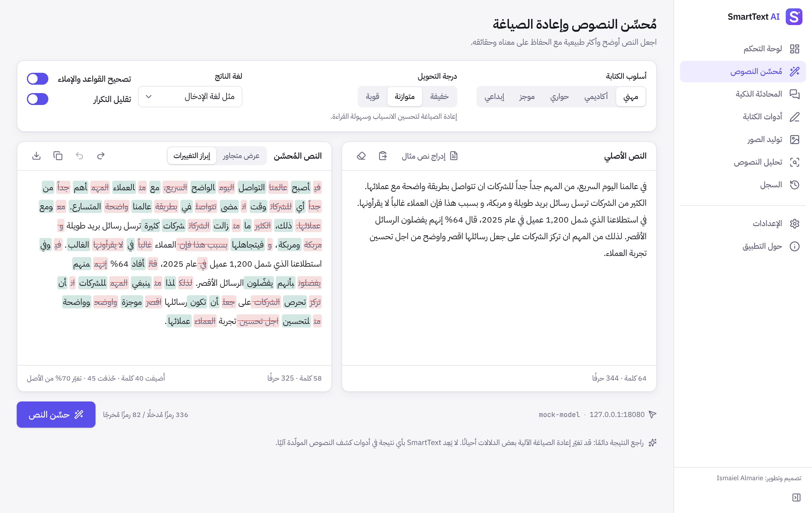
شكل 4-2: عرض «إبراز التغييرات» مع ملخص الفروق (الناتج من خادم المحاكاة المحلي).
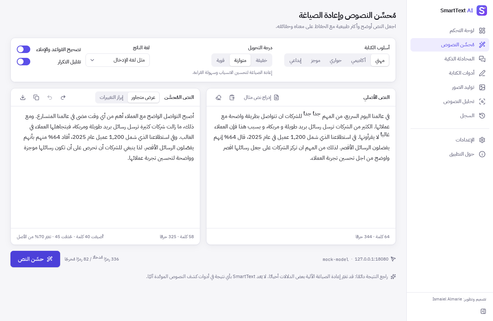
شكل 4-3: المُحسِّن داخل نافذة نسخة سطح المكتب الفعلية (بناء Linux)، حيث مرّ الطلب عبر الطبقة الأصلية (Rust) إلى خادم المحاكاة المحلي؛ النص الناتج ثابت مُعدّ مسبقًا وليس من نموذج حقيقي.
النسخ والتصدير والتراجع
نسخ: ينسخ النص المحسّن إلى الحافظة.
تنزيل: يحفظ النص في ملف .txt أو .md في المكان الذي تختاره.
تراجع / إعادة: تنقّل بين النسخ المولّدة وتعديلاتك اليدوية.
تُحفظ كل نتيجة في السجل تلقائيًا ما دام السجل المحلي مفعّلًا.
الحفاظ على المعنى الأصلي
صُممت تعليمات المُحسِّن لتحافظ على المعنى وعلى كل رقم وتاريخ واسم واقتباس ومصطلح تقني، ولتمنع إضافة معلومات غير موجودة في الأصل. ومع ذلك راجع النتيجة دائمًا، خصوصًا في النصوص القانونية والطبية والأكاديمية.
تنبيه مهمالهدف من المُحسِّن هو تحسين الوضوح والأسلوب بشفافية. لا يَعِد SmartText بتجاوز أدوات كشف النصوص المولّدة آليًا ولا بالحصول على أي نتيجة معينة فيها، وعليك الالتزام بسياسات مؤسستك التعليمية أو المهنية بشأن استخدام الذكاء الاصطناعي.
5
الفصل الخامس
استخدام المحادثة الذكية
بدء محادثة
افتح المحادثة الذكية واكتب رسالتك في الخانة السفلية، ثم اضغط Enter للإرسال (أو Shift+Enter لسطر جديد). يرد المساعد بلغة سؤالك، ويعرض القوائم والجداول والشيفرات البرمجية بتنسيق واضح. ولبدء موضوع جديد اضغط محادثة جديدة.
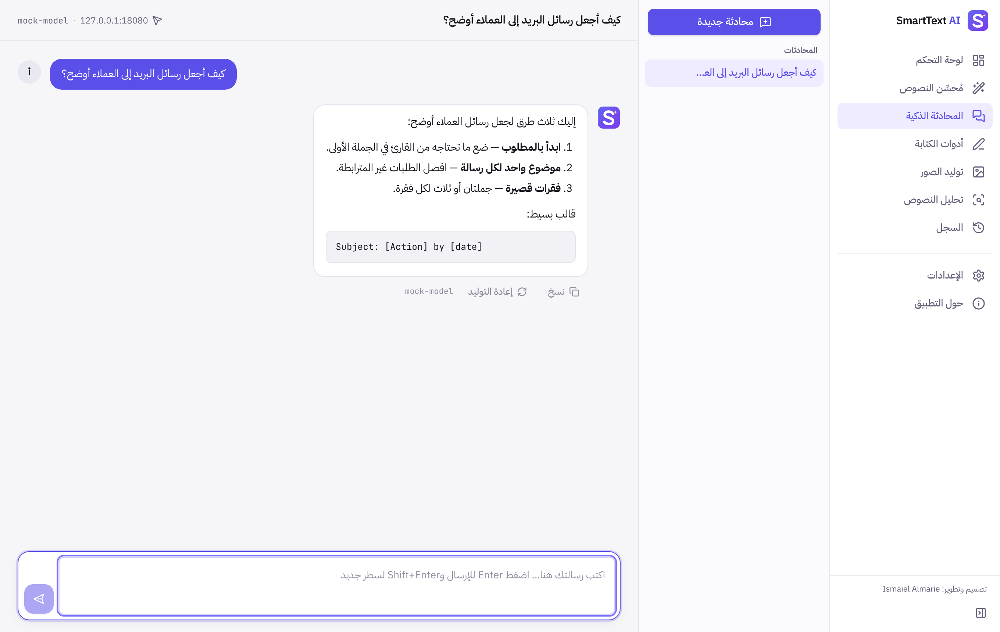
شكل 5-1: محادثة عربية مع قائمة المحادثات، وأزرار النسخ وإعادة التوليد (الرد من خادم المحاكاة المحلي).
إدارة السجل
تُحفظ المحادثات على جهازك فقط، وتظهر في القائمة الجانبية مرتبةً من الأحدث، ويُسمّى كل منها تلقائيًا من أول رسالة.
مرّر المؤشر فوق محادثة لإظهار زرّي إعادة تسمية وحذف.
أسفل كل رد زر نسخ، وأسفل آخر رد زر إعادة التوليد لطلب إجابة بديلة للسؤال نفسه. وللشيفرات البرمجية زر نسخ الشيفرة خاص بها. لا يُنفَّذ أي محتوى يولّده الذكاء الاصطناعي تلقائيًا، ولا تُفتح الروابط أو تُحمَّل الصور الواردة في الردود.
تبديل النماذج
يظهر في أعلى شاشة المحادثة المزوّد والنموذج الحاليان. لتغيير النموذج اذهب إلى الإعدادات ← مزوّدو الذكاء الاصطناعي، واختر نموذجًا آخر أو مزوّدًا آخر؛ ويُطبَّق التغيير على الرسالة التالية مباشرة، ويُكتب اسم النموذج أسفل كل رد.
6
الفصل السادس
أدوات الكتابة
تضم شاشة أدوات الكتابة اثنتي عشرة أداة. اختر الأداة من القائمة، واضبط إعداداتها في البطاقة العلوية، والصق نصك في لوحة الإدخال، ثم اضغط تشغيل. تظهر النتيجة في لوحة النتيجة مع أزرار النسخ والتنزيل وإرسالها إلى مُحسِّن النصوص.
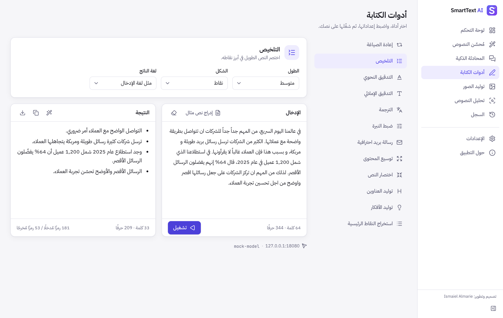
شكل 6-1: أداة التلخيص بشكل «نقاط» (الناتج من خادم المحاكاة المحلي).
الأداة
الإعدادات
الاستخدام
إعادة الصياغة
الأسلوب، لغة الناتج
قول المعنى نفسه بكلمات وتراكيب مختلفة.
التلخيص
الطول، الشكل (فقرة/نقاط)، لغة الناتج
اختصار النصوص الطويلة في أبرز أفكارها.
التدقيق النحوي
عرض قائمة بالتصحيحات
تصحيح القواعد وعلامات الترقيم دون تغيير الأسلوب.
التدقيق الإملائي
—
تصحيح الإملاء فقط، بما في ذلك الهمزات والتاء المربوطة.
الترجمة
اللغة الهدف (8 لغات)
ترجمة طبيعية مع الحفاظ على التنسيق والأرقام والأسماء.
ضبط النبرة
النبرة، لغة الناتج
تحويل النص إلى نبرة ودّية أو رسمية أو واثقة أو مقنعة…
رسالة بريد احترافية
الغرض، النبرة، المستلم
تحويل ملاحظات مختصرة إلى رسالة كاملة بعنوان وتحية وخاتمة.
توسيع المحتوى
مقدار التوسيع
تطوير فكرة قصيرة دون اختلاق إحصاءات أو اقتباسات.
اختصار النص
الطول المستهدف
تقليل الطول إلى 75% أو 50% أو 25% من الأصل.
توليد العناوين
العدد، النمط
اقتراح عناوين إخبارية أو جذابة أو ملائمة لمحركات البحث.
توليد الأفكار
العدد، نوع الأفكار
عصف ذهني حول موضوع أو مشكلة.
استخراج النقاط الرئيسية
الحد الأقصى للنقاط
تحويل النص إلى قائمة نقطية مركّزة.
نصائح للحصول على أفضل النتائج
في الترجمة، راجع المصطلحات المتخصصة، واطلب من المحادثة الذكية بدائل لها عند الحاجة.
في البريد الاحترافي، اكتب الحقائق المهمة (التواريخ، الأرقام، المطلوب) بوضوح في النقاط؛ إذ تضع الأداة عناصر مثل [Your name] مكان المعلومات الناقصة بدل اختلاقها.
يمكنك إرسال نتيجة أي أداة إلى مُحسِّن النصوص بزر العصا السحرية لتحسينها أكثر.
7
الفصل السابع
توليد الصور
يتصل قسم توليد الصور بواجهة OpenAI Images API (النموذجان gpt-image-1 وdall-e-3). إذا لم يكن مفتاح OpenAI محفوظًا، تظهر شاشة إعداد تشرح خطوات الربط، ولا يعرض التطبيق أي صور تجريبية أو وهمية.
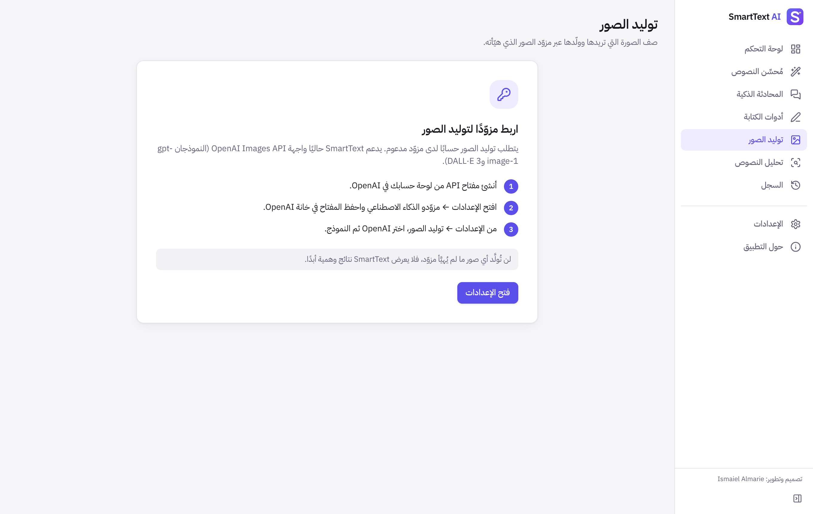
شكل 7-1: شاشة إعداد مزوّد الصور كما تظهر فعليًا عند عدم وجود مفتاح. (لم تُلتقط لقطة لصورة مولّدة لعدم توفر مفتاح حقيقي أثناء إعداد الدليل.)
كتابة وصف الصورة
اكتب في خانة الوصف ما تريد رؤيته بوضوح: الموضوع، والمكان، والإضاءة، والألوان، وزاوية التصوير. مثال: «ركن قراءة هادئ بجوار نافذة عند الشروق، نباتات خضراء، إضاءة دافئة، لقطة واسعة». الوصف التفصيلي يعطي نتائج أدق.
خانة الوصف السلبي معطّلة مع OpenAI لأن واجهتها لا تدعم هذه الميزة؛ وبدلًا من ذلك اذكر ما تريد تجنبه داخل الوصف نفسه (مثل: «بدون نصوص مكتوبة»).
اختيار نسبة الأبعاد والجودة والنمط
الخيار
gpt-image-1
dall-e-3
مربّعة
1024×1024
1024×1024
أفقية
1536×1024
1792×1024
عمودية
1024×1536
1024×1792
الجودة
تلقائية، منخفضة، متوسطة، عالية
قياسية، عالية الدقة
أما النمط الجاهز (فوتوغرافي، فن رقمي، ألوان مائية، ثلاثي الأبعاد، رسم خطي، سينمائي، أنمي) فيضيف وصفًا أسلوبيًا قصيرًا إلى الوصف المرسل.
التوليد والحفظ
اضغط ولّد الصورة؛ يظهر شريط تقدّم وعدّاد للثواني (قد يستغرق التوليد حتى دقيقة).
تظهر الصورة في لوحة النتيجة، ومعها الوصف كما فسّره المزوّد إن وُجد.
اضغط حفظ الصورة لحفظها بصيغة PNG في المكان الذي تختاره.
تُحفظ آخر 60 صورة في سجل التوليد إذا كان سجل الصور مفعّلًا.
حدود المزوّد ورسومه
كل صورة تُحتسب على حسابك لدى OpenAI حسب النموذج والجودة والحجم؛ راجع صفحة الأسعار لدى المزوّد.
قد يرفض المزوّد بعض الأوصاف وفق سياسة المحتوى، فتظهر رسالة «رفض المزوّد هذا الطلب وفق سياسة المحتوى لديه».
عند فشل الطلب تظهر رسالة الخطأ دون أي صورة بديلة.
8
الفصل الثامن
تحليل النصوص
فهم تقرير التشابه
الصق نصّين في خانتي المستند (أ) والمستند (ب) ثم اضغط قارن المستندين. تجري المقارنة كلها على جهازك ولا يُرسل أي نص إلى الإنترنت. ويوحّد التطبيق أشكال الهمزات والتاء المربوطة والألف المقصورة ويتجاهل التشكيل عند المقارنة العربية.
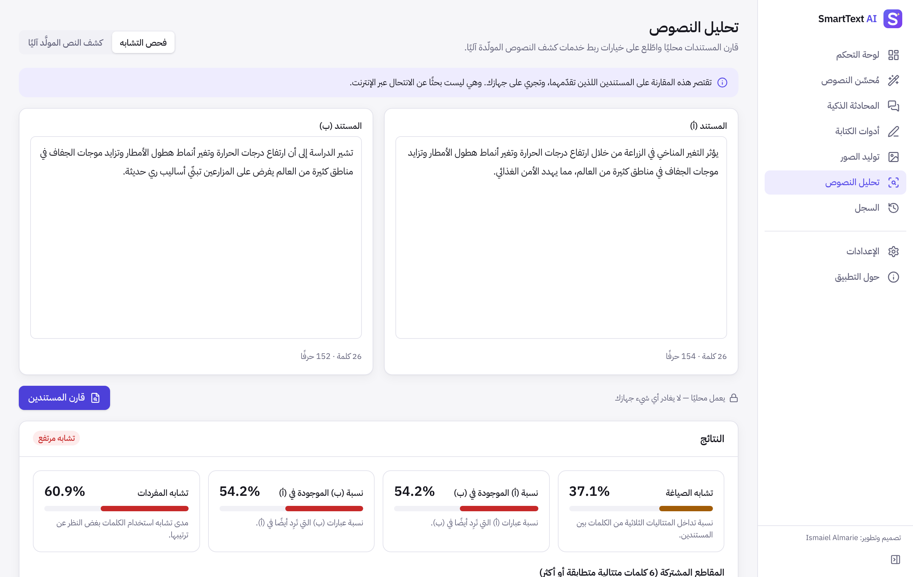
شكل 8-1: تقرير تشابه حقيقي بين مستندين عربيين يشتركان في مقطع طويل (هذا الفحص محلي بالكامل ونتائجه محسوبة فعليًا، لا من خادم المحاكاة).
المؤشر
معناه
تشابه الصياغة
نسبة المتتاليات الثلاثية من الكلمات المشتركة إلى مجموع المتتاليات في المستندين.
نسبة (أ) الموجودة في (ب)
كم من عبارات المستند (أ) تتكرر في (ب). مفيد إذا كان (أ) نصًا يُشتبه في اقتباسه من (ب).
نسبة (ب) الموجودة في (أ)
العكس.
تشابه المفردات
تقارب الكلمات المستخدمة بغض النظر عن ترتيبها.
المقاطع المشتركة
كل تسلسل متطابق من ست كلمات متتالية أو أكثر، مرتّبًا من الأطول.
ما لا يفعله هذا الفحصالمقارنة تقتصر على المستندين اللذين تقدّمهما، وليست بحثًا عن الانتحال عبر الإنترنت أو في قواعد بيانات الأبحاث. التشابه المرتفع قد يكون له سبب مشروع (اقتباس موثّق، عبارات شائعة، مصدر مشترك)، فتعامل معه بوصفه مؤشرًا للمراجعة البشرية لا دليلًا قاطعًا.
نتائج كشف النصوص المولّدة آليًا (اختيارية)
لا يتضمن هذا الإصدار مزوّدًا لكشف النصوص المولّدة آليًا، ولذلك يعرض التبويب حالة «غير مربوط» بوضوح دون أي درجات. وقد جُهّزت في الشيفرة واجهة برمجية لربط خدمة كشف ذات واجهة موثّقة مستقبلًا، على أن تُعرض نتائجها كما يقدّمها المزوّد مع ذكر اسمه.
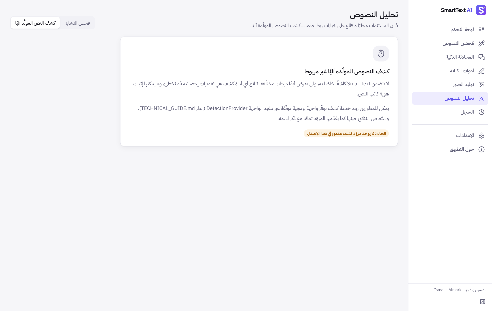
شكل 8-2: تبويب كشف النصوص المولّدة آليًا كما يظهر فعليًا في هذا الإصدار: لا مزوّد مدمج ولا درجات مختلقة.
حدود التفسير المسؤول
نتائج أي أداة كشف هي تقديرات إحصائية قد تخطئ، خصوصًا مع النصوص القصيرة أو المترجمة أو المكتوبة بلغة ثانية.
لا يمكن لأي أداة أن تثبت يقينًا من كتب نصًا ما، فلا تُبنَ قرارات تأديبية أو أكاديمية على نتيجتها وحدها.
9
الفصل التاسع
الإعدادات والخصوصية
اللغة والسمة
من الإعدادات ← عام اختر لغة الواجهة (العربية أو English) والسمة (حسب النظام، فاتحة، داكنة). يتغير الاتجاه والخطوط فورًا، وتُحفظ اختياراتك محليًا.
السجل المحلي
يحفظ التطبيق نتائج المُحسِّن والأدوات والمحادثات والصور في قاعدة بيانات SQLite على جهازك فقط. ومن شاشة السجل يمكنك البحث في النتائج وتصفيتها حسب النوع، وعرض الإدخال والناتج، ونسخهما، وفتح الناتج في المُحسِّن، وحذف أي عنصر.
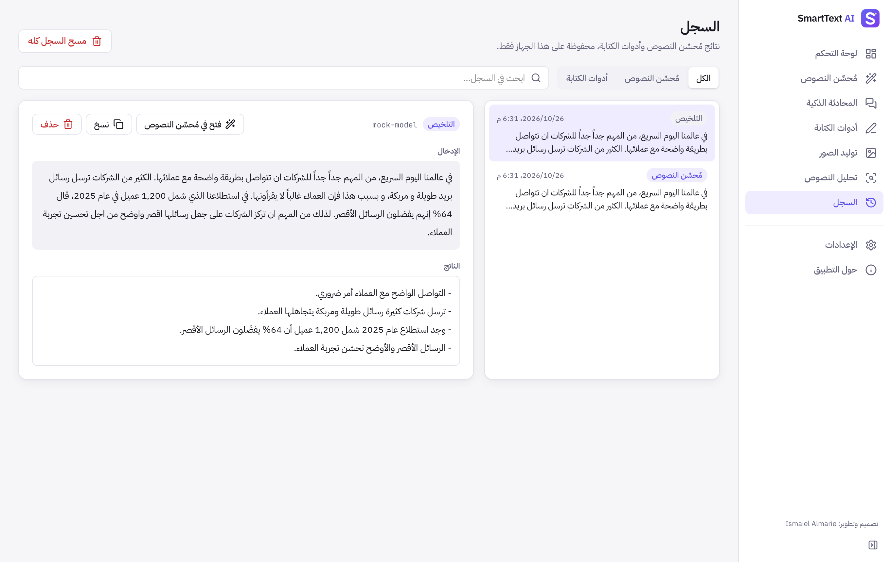
شكل 9-1: شاشة السجل مع نتائج محفوظة محليًا (النتائج المعروضة جاءت من خادم المحاكاة المحلي).
مسح البيانات المخزنة
من الإعدادات ← الخصوصية والبيانات يمكنك إيقاف حفظ كل نوع من البيانات على حدة، ومسح سجل النصوص، أو حذف المحادثات، أو حذف الصور، أو محو كل البيانات المحلية. ولا تُحذف مفاتيح API عند المحو إلا إذا أزلتها صراحة من بطاقة المزوّد.
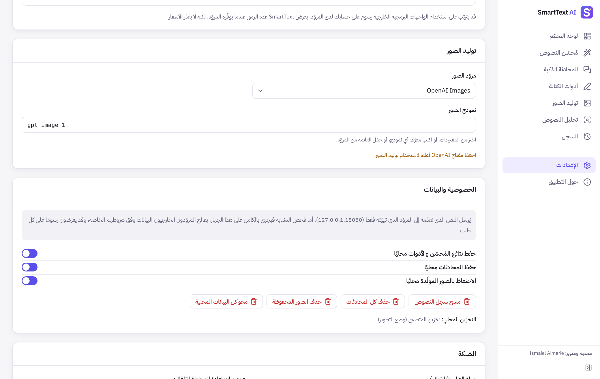
شكل 9-2: إعدادات الخصوصية والبيانات والشبكة.
أمان مفاتيح API
تُخزّن المفاتيح في مخزن بيانات الاعتماد الآمن لنظام التشغيل، لا في ملفات التطبيق ولا في قاعدة البيانات.
لا تُعرض المفاتيح بعد حفظها، ولا تُكتب في السجلات أو رسائل الخطأ؛ ويُزال أي أثر لها من ردود المزوّدين قبل عرضها.
لا تتصل الواجهة بالإنترنت مباشرة؛ فكل الطلبات تمر عبر الجزء الأصلي الذي يسمح فقط بعناوين المزوّدين المعتمدة.
معالجة البيانات لدى الأطراف الخارجية
عند استخدام مزوّد سحابي تُرسل نصوصك ووصف الصور إليه للمعالجة، ويخضع ذلك لشروطه وسياسة الخصوصية لديه. ويظهر بجوار كل زر تنفيذ اسم الجهة المستقبلة والنموذج. وإذا أردت إبقاء النصوص على جهازك تمامًا فاستخدم خادمًا محليًا مثل Ollama.
تظهر الأخطاء في مربع أحمر يشرح السبب بالعربية، ويتضمن عند الحاجة رسالة المزوّد الأصلية (بعد حذف أي بيانات حساسة) وزر فتح الإعدادات أو إعادة المحاولة.
الرسالة / العَرَض
السبب المحتمل
الحل
رفض المزوّد مفتاح API
مفتاح خاطئ أو ملغى أو منسوخ ناقصًا
أنشئ مفتاحًا جديدًا واحفظه عبر «استبدال المفتاح»، ثم اختبر الاتصال.
لا يوجد مفتاح API محفوظ
لم يُحفظ مفتاح للمزوّد المختار
احفظ المفتاح في بطاقة المزوّد، أو اختر مزوّدًا آخر.
تعذّر الوصول إلى المزوّد
انقطاع الإنترنت، جدار حماية، أو عنوان خادم خاطئ
تحقق من الاتصال ومن عنوان الخادم، وتأكد أن Ollama يعمل إن كنت تستخدمه.
تجاوزت حد الطلبات
طلبات كثيرة في وقت قصير
انتظر قليلًا؛ يعيد التطبيق المحاولة تلقائيًا. يمكن زيادة عدد المحاولات من الإعدادات.
لم يتبقَّ رصيد أو حصة
انتهاء الرصيد أو تجاوز حد الإنفاق
أضف رصيدًا أو ارفع الحد من لوحة حسابك لدى المزوّد.
استغرق المزوّد وقتًا طويلًا
نص طويل جدًا أو بطء المزوّد
أعد المحاولة، أو قسّم النص، أو زِد المهلة من الإعدادات ← الشبكة.
أعاد المزوّد نتيجة فارغة
رفض ضمني أو إدخال غير واضح
أعد صياغة الإدخال أو جرّب نموذجًا آخر.
لا يتعرّف المزوّد على النموذج
معرّف نموذج خاطئ أو غير متاح لحسابك
استخدم «تحميل النماذج» واختر نموذجًا من القائمة.
فشل توليد الصورة
رفض وفق سياسة المحتوى، أو حد الطلبات، أو عدم توفر النموذج
عدّل الوصف، أو جرّب جودة أقل، أو تحقق من صلاحيات حسابك لتوليد الصور.
عنوان الخادم غير مسموح
استخدام http:// مع خادم بعيد
استخدم https://، فعنوان http:// مسموح لـ localhost فقط.
سلسلة مفاتيح النظام غير متاحة
سلسلة المفاتيح مقفلة أو مرفوض الوصول إليها
افتح قفل سلسلة المفاتيح ووافق على طلب الوصول، ثم أعد الحفظ.
أخطاء التثبيت
توقيع مفقود أو حزمة غير مطابقة
راجع جدول مشكلات التثبيت في الفصل الثاني.
نظام أو معمارية غير مدعومة
Windows 32 بت أو ARM، أو macOS أقدم من 10.15
استخدم جهازًا بنظام مدعوم؛ هذه البيئات غير مدعومة في الإصدار الحالي.
11
الفصل الحادي عشر
الأسئلة الشائعة
هل يعمل التطبيق دون اتصال بالإنترنت؟
جزئيًا. فحص التشابه والسجل والإعدادات تعمل دون اتصال. أما ميزات الذكاء الاصطناعي فتحتاج إلى مزوّد: سحابي (يتطلب إنترنت) أو محلي مثل Ollama (يعمل دون إنترنت بعد تنزيل النموذج).
هل يتطلب اشتراكًا؟
لا يتطلب SmartText اشتراكًا خاصًا به. تدفع لمزوّد الذكاء الاصطناعي فقط مقابل استخدامك، حسب أسعاره، أو تستخدم نموذجًا محليًا مجانيًا.
هل يعمل دون مفاتيح API؟
تعمل الواجهة وفحص التشابه والسجل دون مفاتيح. وميزات النصوص تعمل دون مفتاح إذا استخدمت خادمًا محليًا. أما OpenAI وAnthropic وتوليد الصور فتتطلب مفاتيح.
هل النتائج المولّدة دقيقة دائمًا؟
لا. قد يخطئ الذكاء الاصطناعي في المعلومات أو يغيّر بعض الدلالات. راجع أي محتوى مهم قبل استخدامه، وتحقق من الحقائق والأرقام والمراجع.
كيف تُحتسب التكاليف؟
يحتسب المزوّد التكلفة عادةً حسب عدد الرموز (Tokens) المرسلة والمستقبلة للنصوص، وحسب عدد الصور وحجمها وجودتها للصور. يعرض التطبيق عدد الرموز عندما يوفّره المزوّد، وتجد التفاصيل في صفحة الأسعار ولوحة الاستخدام لديه.
أين تُحفظ الملفات المحلية؟
في ملف قاعدة البيانات smarttext.db داخل مجلد إعدادات التطبيق (انظر الجدول في الفصل التاسع)، ويظهر المسار الدقيق في الإعدادات ← الخصوصية والبيانات. أما الملفات التي تصدّرها فتُحفظ حيث تختار.
npm ci
npm run tauri dev # desktop app with hot reload
npm test # automated tests (mocked providers)
cd src-tauri && cargo test
بناء حزم الإصدار
npm run tauri build # current OS
npm run tauri build -- --target aarch64-apple-darwin # macOS Apple Silicon
npm run tauri build -- --target x86_64-apple-darwin # macOS Intel
npm run tauri build -- --target universal-apple-darwin # macOS universal
البناء على نظام واحد لا ينتج حزم الأنظمة الأخرى. لبناء حزم macOS وWindows معًا، شغّل سير العمل .github/workflows/release.yml من تبويب Actions، أو ادفع وسمًا مثل v1.0.0. وتفاصيل التوقيع والتوثيق في INSTALL_MACOS.md وINSTALL_WINDOWS.md.
إضافة مزوّدي ذكاء اصطناعي جدد
إذا كان المزوّد متوافقًا مع OpenAI Chat Completions فلا حاجة لأي برمجة: اختر «خادم متوافق مع OpenAI» وأدخل عنوانه.
وإلا: أضف عنوانه وطريقة المصادقة في src-tauri/src/provider.rs وserver/providerProxy.ts، واكتب محوّلًا (Adapter) في src/lib/ai/providers/ يطبّق الواجهة TextAdapter، وسجّله في registry.ts، وأضف ترجمات الاسم، ثم اختبارات بردود مُحاكاة. التفاصيل الكاملة في TECHNICAL_GUIDE.md.
تصميم وتطوير
Ismaiel Almarie
SmartText AI — الإصدار 1.0.0 — رخصة MIT
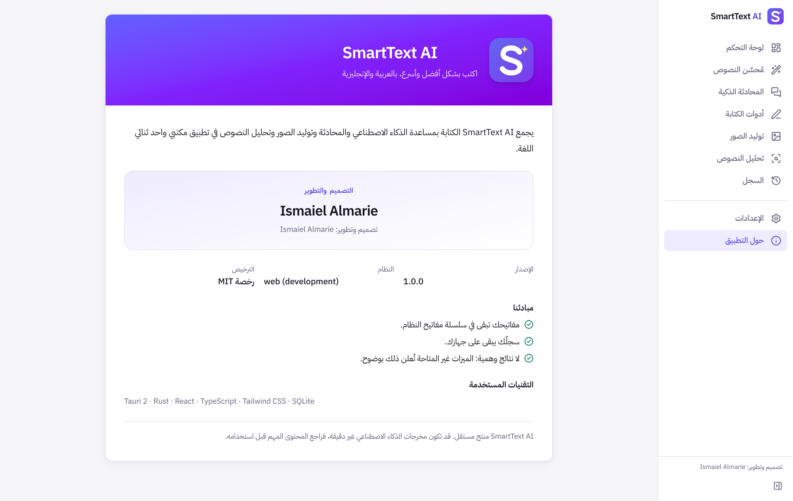
شكل 12-1: شاشة «حول التطبيق» مع اسم المطوّر.
✓
ملحق
قائمة التحقق النهائية وحالة الميزات
قبل الاستخدام اليومي
ثبّتُّ الحزمة المطابقة لنظامي ومعالجي.
اخترت لغة الواجهة والسمة.
حفظت مفتاح API واحدًا على الأقل، أو هيّأت خادمًا محليًا.
نجح «اختبار الاتصال» واخترت النموذج.
راجعت إعدادات الخصوصية وحفظ السجل.
أعرف أن الاستخدام يُحتسب على حسابي لدى المزوّد.
حالة الميزات في الإصدار 1.0.0
الميزة
الحالة
ملاحظات
مُحسِّن النصوص والمقارنة
مُنفّذ ومُختبَر
اختبارات آلية بردود مُحاكاة؛ يتطلب مفتاحًا لنتائج حقيقية.
المحادثة الذكية وسجلها
مُنفّذ ومُختبَر
دون بث تدريجي للردود.
أدوات الكتابة الاثنتا عشرة
مُنفّذ ومُختبَر
يتطلب مفتاحًا لنتائج حقيقية.
توليد الصور
مُنفّذ ومُختبَر
عبر OpenAI؛ لم يُختبر باتصال حقيقي لعدم توفر مفتاح.